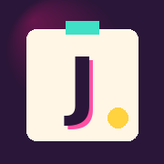

Nur für dich, Adri ✨
Das ist dein Jarvis
Max hat dir einen eigenen Assistenten gebaut. Er kennt adri.chaos, die Stammtischbande und Casa Adriana, und er hat einen klaren Job:
Sein Job
- 🧭Dein Chaos sortierenDu schreibst alles rein, durcheinander ist okay. Er macht Ordnung draus.
- 🎯Dir immer nur den nächsten Schritt gebenEinen kleinen, unter 10 Minuten. Mit Timer und „Geschafft“-Knopf.
- 🅿️Den Rest parkenWas gerade nicht dran ist, landet auf deinem Gedanken-Parkplatz. Nichts geht verloren.
- 📅Deinen Tag planenEin Hauptziel, höchstens drei Aufgaben, Pausen inklusive.
- 💡Dich beratenContent-Ideen, Captions, Shop-Texte und eine klare Empfehlung, wenn du dich entscheiden musst.
Alles, was du ihm erzählst, bleibt auf deinem Gerät. Er gehört dir.
Hol dir deinen Jarvis
Diese Seite in Safari öffnen
- Der blaue Kompass auf deinem iPhone.
- Bist du gerade in WhatsApp oder Instagram? Dann oben rechts auf die drei Punkte und „In Safari öffnen“.
Auf „Jarvis öffnen“ tippen
- Der rosa Knopf direkt über diesen Schritten.
- Jarvis begrüßt dich mit „Hey Adri, kurz einrichten“.
Als App auf den Home-Bildschirm legen
- Unten auf das Teilen-Symbol tippen (Viereck mit Pfeil nach oben).
- Nach unten wischen und Zum Home-Bildschirm antippen.
- Oben rechts Hinzufügen tippen.
Ab jetzt ist Jarvis ein Symbol auf deinem Home-Bildschirm. Öffne ihn immer dort.Deinen kostenlosen Schlüssel holen
- Öffne Jarvis über das neue Symbol.
- Tipp auf den rosa Link aistudio.google.com/apikey und melde dich mit deinem Google-Konto an.
- Tipp auf API-Schlüssel erstellen (oder „Create API key“) und dann auf „Kopieren“.
Schlüssel in Jarvis einsetzen
- Zurück zu Jarvis, ins Feld „Dein Gemini-Schlüssel“ tippen und lange drücken, dann „Einsetzen“.
- Auf Testen & speichern tippen.
- Steht da „Klappt! ✨“? Dann bist du fertig.
Diese Seite in Safari öffnen
- Safari ist der blaue Kompass im Dock.
- Kopier den Link aus deiner Nachricht und füg ihn oben in Safari ein.
Auf „Jarvis öffnen“ klicken
- Der rosa Knopf direkt über diesen Schritten. Jarvis öffnet sich in einem neuen Tab.
Jarvis ins Dock legen
- Oben in der Menüleiste auf Ablage klicken.
- Dann Zum Dock hinzufügen und Hinzufügen.
Jetzt ist Jarvis unten im Dock, wie eine richtige App. Öffne ihn immer dort.Deinen kostenlosen Schlüssel holen
- Öffne Jarvis über das Dock.
- Klick auf den rosa Link aistudio.google.com/apikey und melde dich mit deinem Google-Konto an.
- Hast du am iPhone schon einen erstellt? Dann siehst du ihn dort und klickst nur auf „Kopieren“.
- Sonst API-Schlüssel erstellen klicken und kopieren.
Schlüssel in Jarvis einsetzen
- Ins Feld „Dein Gemini-Schlüssel“ klicken und mit ⌘ + V einfügen.
- Auf Testen & speichern klicken. Bei „Klappt! ✨“ bist du fertig.
- Gut zu wissen: Mac und iPhone merken sich alles getrennt.
Und dann?
Tipp auf 🧭 Sortier mich und schreib Jarvis, was dir gerade im Kopf herumschwirrt. Er macht den Rest. Wenn etwas hakt: Screenshot an Max.
Diese Seite ist nur über deinen Link erreichbar und taucht in keiner Suchmaschine auf.